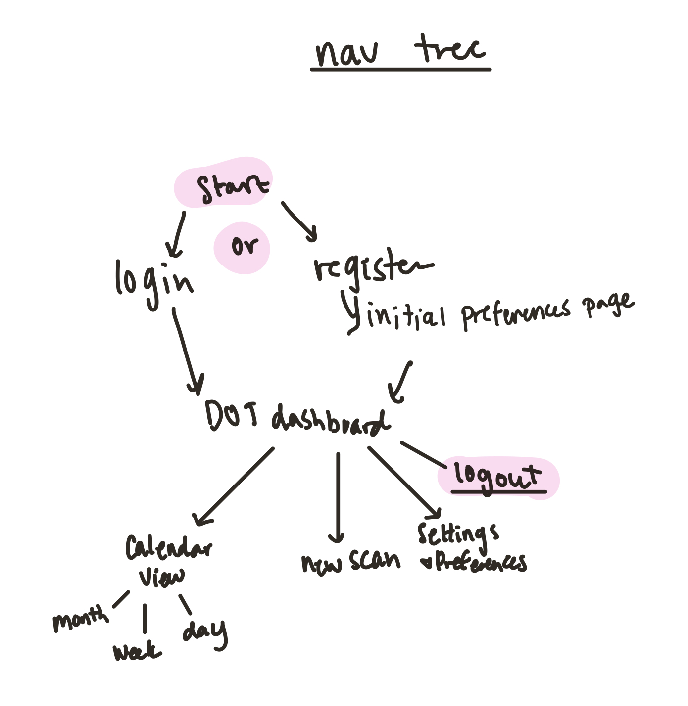

Instructions:
Identify the two core values for your UI. Write a few sentences about each one and why they are especially relevant to your UI
- Empathy
- Transparency: So often it feels like interfaces are to make the information you need difficult to find. The goal of DOT is to clearly communicate the day's itinerary to the user; combining a calendar view with a task list that finds a connection between physical and digital planning. The site will be easy to understand and navigate, giving users the control and transparency that they are looking for.
Explain how you will express that core value in your UI. You need at least 3 strategies per value (copy, colors, signifiers, etc. can all count as strategies, but they are by no means a comprehensive list).
- Signifier: My website will utilize icons that have clearly stated alternative text, so the purpose of each button is very simple. to get back to the main dashboard, the users will click on the logo. to see the calendar view, the usual click on the calendar. to make a new scan, users click on the plus button. if the user needs to access their settings or log out, there are two buttons; one that looks like a gear and the other the word "logout", respectively. having signifiers that can be used by all types of users emphasizes the empathetic and transparent values of the site.
- Multiple Calendar Views: Not everyone likes to look at their schedule the same way. some weeks are too busy to only look one day at a time, because of this the users can access all of their tasks and events that they want to look at in three different formats (day, week, month). This gives them a feeling of personalization and a higher sense of control since they get to customize how they view their content without having to put in too much work to change the layout. being able to scan multiple types of physical, analog calendars, planners, habit trackers, to-do lists, and whatever else the user could need easily allows them to get the personalized view that makes looking at the upcoming tasks as simple and stress-free as possible.
- Copy: All text you within the DOT interface is highly intentional. while there are tool tips and instructions varied throughout the site the majority of the text should always be the user-specific content and not DOT instructions. This interface is truly the means between a user and their schedule, and will not be used for advertising its own interests or agendas. therefore most of the copy text in the site is determined by the user rather than myself. the text is whatever they have going on that day (or week or month), rather than what Iwant them to feel.
Develop a list of all the pages that would likely be included in a full version of your UI. Think critically about how your users will navigate your UI for all their tasks. By making this list, you are not committing to building these pages, but you will include the page titles in the mockup of your navigation menu.
- Login
- Register
- Initial preferences page
- Dashboard month view, week view, day view
- Dot page: tasks & events for today
- New scan upload
- Settings & preferences
Arrange those pages into a sensical navigation tree. For the sake of this assignment, you can use outline style to display the nesting. Bold the pages you actually plan to build.
